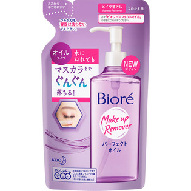

返回列表
产品名称：ビオレ メイク落とし パーフェクトオイル つめかえ用

花王 ビオレ メイク落とし パーフェクトオイル つめかえ用 ２１０ＭＬ
メーカー 花王
JANコード 4901301299031
商品の特徴
水にぬれても
するんと落ちる
- 成分・分量
- ミネラルオイル、ラウリン酸PEG－12、イソドデカン、水、パルミチン酸イソプロピル、シクロメチコン、イソステアリン酸ポリグリセリル－2、デシルグルコシド、ポリンルベート85、オレイン酸グリセリル、イソステアリン酸、イソステアリルグリセリル、イソステアリルグリセリルペンタエリスリチル、ミリスチルアルコール、エタノール、クエン酸、リン酸、BHT、香料、トコフェロール
- 用法及び用量
- ・必ず「ビオレ パーフェクトオイル 230ml」の使用済み容器につめかえてください。
150mlのサイズにはつめかえられません。
・ボトルとポンプは洗わずに、そのままつめかえてください。
水が混入すると、性能を損なうことがあります。
・使い切ってから全量つめかえて、他の製品や異なった製造番号のものが混ざらないようにしてください。
・つめかえ後、パック右下の製造番号を控えておいてください。
お問合せの際に必要な場合があります。
．衛生的にお使いいただくために、2～3回つめかえた後には、新しい容器にお取替えいただくことをおすすめします。
＜中身をこぼさずにつめかえるポイント＞
1．ボトルを少し傾けて持ちます。
2．ボトルに注ぎ口を奥までしっかり差し込み、そのままゆっくり傾けながら液がこぼれないように入れてください。
※ボトルが倒れないよう、ご注意ください。
※パックを強く持つと、液が飛び出ることがあります。